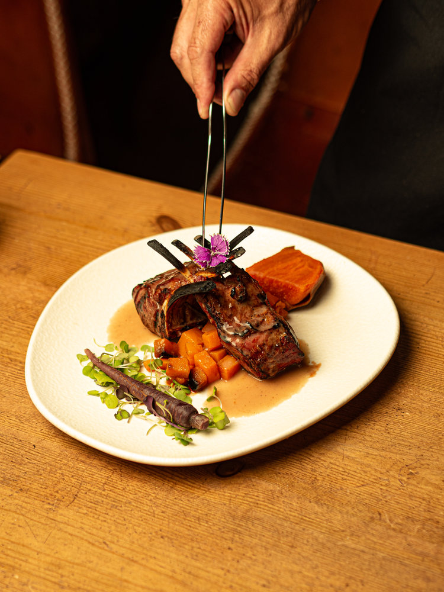

THE SPIRIT OF ARCANO
OUT OF time.
INTO THE moment.
A former 17th-century stable.
A contemporary Mediterranean table.
In El Born, history isn’t behind you.
It’s all around you.
Some evenings
deserve another world.
 Come a little closer
Come a little closer
 Follow your appetite
Follow your appetite
THE SPIRIT OF ARCANO
A former 17th-century stable.
A contemporary Mediterranean table.
In El Born, history isn’t behind you.
It’s all around you.
Look closer.
Every arch holds an evening.
ARCANO · EL BORNOriginal stone, warm light, and a passage into another Barcelona.
FROM ARCANO’S KITCHENThere’s a whole evening
in a single glass.

Not just
dinner.
Carrer dels Mercaders, 10
El Born · 08003 Barcelona